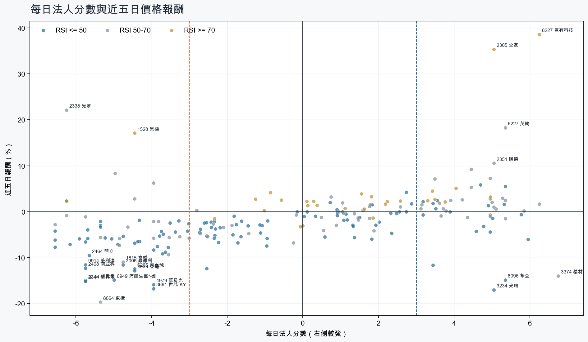
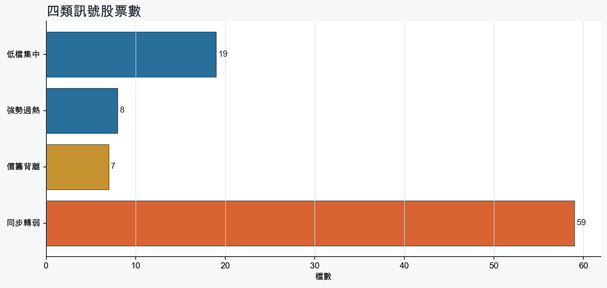
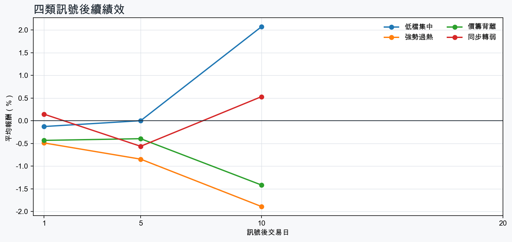

市場情緒偏空
近5日法人合計-4,206,027 張
篩選池上漲比例32.4%
籌碼好 / RSI低15 檔
籌碼差 / 價跌15 檔



EPS × PE VALUATION
法人常用的相對估值
顯示保守、基準與樂觀估值帶，不把單一數字包裝成精準目標價。
最新累計 EPS 依季數年化 × 同產業有效 P/E 的 Q25／中位數／Q75。排除本公司、非正 P/E，並以 1.5×IQR 排除離群值。估值帶是公開資料篩選值，不是法人目標價；未使用分析師預估 EPS。
MOOD × MONEY
情緒與籌碼雷達
熱度代表被討論程度；情緒分與法人方向分開計算。熱門不等於適合追價，樣本不足也不硬判多空。
| 股票 | 情緒 | 討論熱度 | 情緒 × 籌碼 | 情緒 × 基本面 |
|---|---|---|---|---|
| 3029 零壹價籌背離 | 情緒高漲 +45.4信心 95 | 1001 篇 / 198 留言 / 2 則新聞 | 熱門但法人撤退法人分 -4.0 | 基本面與情緒共振基本面分 +3.0 |
| 8046 南電低檔集中 | 情緒高漲 +64.2信心 83 | 861 篇 / 84 留言 / 3 則新聞 | 情籌共振法人分 +4.7 | 基本面與情緒共振基本面分 +3.6 |
| 2408 南亞科同步轉弱 | 偏多 +26.6信心 89 | 812 篇 / 56 留言 / 3 則新聞 | 熱門但法人撤退法人分 -5.8 | 基本面與情緒共振基本面分 +3.6 |
| 2305 全友強勢過熱 | 情緒高漲 +70.5信心 88 | 782 篇 / 42 留言 / 3 則新聞 | 情籌共振法人分 +5.0 | 基本面與情緒共振基本面分 +3.6 |
| 3661 世芯-KY同步轉弱 | 偏空 -34.7信心 64 | 671 篇 / 20 留言 / 3 則新聞 | 情籌雙弱法人分 -4.0 | 基本面佳、情緒悲觀基本面分 +3.6 |
| 5314 世紀*低檔集中 | 偏空 -33.9信心 56 | 621 篇 / 11 留言 / 3 則新聞 | 法人布局、市場悲觀法人分 +3.4 | 基本面佳、情緒悲觀基本面分 +3.6 |
| 2892 第一金強勢過熱 | 偏多 +22.4信心 46 | 581 篇 / 9 留言 / 2 則新聞 | 情籌共振法人分 +3.4 | 基本面與情緒共振基本面分 +2.8 |
| 3045 台灣大強勢過熱 | 中性分歧 +0.0信心 43 | 521 篇 / 0 留言 / 3 則新聞 | 情籌混合法人分 +4.0 | 基本面與情緒分歧基本面分 +2.4 |
| 3376 新日興同步轉弱 | 中性分歧 +0.0信心 30 | 430 篇 / 0 留言 / 3 則新聞 | 情籌混合法人分 -5.8 | 基本面與情緒分歧基本面分 -1.8 |
| 2344 華邦電同步轉弱 | 偏空 -29.7信心 30 | 430 篇 / 0 留言 / 3 則新聞 | 情籌雙弱法人分 -5.8 | 基本面佳、情緒悲觀基本面分 +3.6 |
| 4979 華星光同步轉弱 | 偏多 +29.7信心 30 | 430 篇 / 0 留言 / 3 則新聞 | 熱門但法人撤退法人分 -4.0 | 基本面與情緒共振基本面分 +3.6 |
| 8039 台虹同步轉弱 | 偏多 +29.7信心 30 | 430 篇 / 0 留言 / 3 則新聞 | 熱門但法人撤退法人分 -4.0 | 基本面與情緒分歧基本面分 -0.1 |
01
籌碼好 / RSI低
優先研究基本面；法人續買且價格止穩時，才適合分批觀察。
| 股票 / 確認狀態 | 每日法人分 | 浦男式近似 | 法人加速度 | RSI / 相對強弱 | 量價確認 | 融資融券 | 每週集保確認 | 基本面 | EPS × 同業 P/E 估值 | 情緒 / 情籌 | 近期消息 | 論壇討論 |
|---|---|---|---|---|---|---|---|---|---|---|---|---|
| 6805 富世達可研究 · 100 分籌碼與價格確認，可列研究清單 | +6.0法人 +994 張 / 5 天 | 接近 · 80中期均線偏多；法人籌碼偏多；法人買盤加速；留意未站月線、量能尚未確認 | +282 張近3日 +641 / 連續 +8 日 | 50.0相對大盤 +2.9% | 量比 0.83確認分 +2.5收盤跌破20日線 | -%融資 - 張 / 融券 - 張 | +3.18 pp1000張 +6.24 pp | 單月營收年增 +29.1%；累計營收年增 +49.8%；2026 Q2 累計 EPS 25.77仍需觀察下一期財報延續性來源：公開資訊觀測站 | 基準 NT$ 1,272估值帶 884.9–2,066現價 2,025 · 估值帶內 · 距基準 -37.2%2026 Q2 累計 EPS 25.77 → 年化 51.54電子零組件同業 P/E 17.17／24.68／40.09 · n=149 · 信心中等以 Q2 累計 EPS 年化，不等同分析師全年預估來源：TWSE／TPEx 每日本益比 | 樣本不足 +0.0熱度 0 / 信心 0情緒樣本不足 | 近期沒有通過股票語境篩選的新聞 | 近期沒有明確提及本股的論壇樣本 |
| 5314 世紀*等待確認 · 89 分籌碼有訊號，但價格尚未確認 | +3.4法人 +9,924 張 / 3 天 | 接近 · 83站上月線；中期均線偏多；法人籌碼偏多；留意法人買盤未加速、量能異常 | -4,138 張近3日 +3,243 / 連續 -2 日 | 49.6相對大盤 +74.5% | 量比 0.63確認分 +1.8成交量不足；法人買盤減速 | -8.9%融資 -1,097 張 / 融券 -617 張 | +5.70 pp1000張 +5.80 pp | 單月營收年增 +102.5%；累計營收年增 +151.4%；2026 Q2 累計 EPS 0.66仍需觀察下一期財報延續性來源：公開資訊觀測站 | 基準 NT$ 18.76估值帶 13.64–30.43現價 34.20 · 高於估值帶 · 距基準 -45.1%2026 Q2 累計 EPS 0.66 → 年化 1.32其他同業 P/E 10.33／14.21／23.05 · n=71 · 信心較低以 Q2 累計 EPS 年化，不等同分析師全年預估；年化 EPS 為交易所近四季 EPS 的 0.29 倍，需保守解讀來源：TWSE／TPEx 每日本益比 | 偏空 -33.9熱度 62 / 信心 56法人布局、市場悲觀 | 世紀*連3日跌停 7.7萬張賣單排隊 股民哀號：完全沒想讓我們自由買賣自由財經 · 09/15世紀*9億股增資股出籠 連4日漲停今摔跌停ETtoday財經雲 · 09/11 | [標的] 請問5314世紀除權PTT Stock · 09-15 · 11 留言 |
| 3034 聯詠可研究 · 90 分籌碼與價格確認，可列研究清單 | +4.9法人 +4,647 張 / 4 天 | 接近 · 86中期均線偏多；法人籌碼偏多；法人買盤加速；留意未站月線、動能位置非最佳 | +81 張近3日 +2,268 / 連續 -1 日 | 43.1相對大盤 +6.7% | 量比 1.07確認分 +2.3收盤跌破20日線 | -%融資 - 張 / 融券 - 張 | +0.76 pp1000張 +0.29 pp | 單月營收年增 +26.3%；累計營收年增 +4.1%；2026 Q2 累計 EPS 16.59仍需觀察下一期財報延續性來源：公開資訊觀測站 | 基準 NT$ 853.1估值帶 559.8–1,460現價 541.0 · 低於估值帶 · 距基準 +57.7%2026 Q2 累計 EPS 16.59 → 年化 33.18半導體同業 P/E 16.87／25.71／44.00 · n=148 · 信心中等以 Q2 累計 EPS 年化，不等同分析師全年預估來源：TWSE／TPEx 每日本益比 | 樣本不足 +0.0熱度 26 / 信心 10情緒樣本不足 | 【09/15券商評等報告彙整】聯詠(3034) 今日僅1家券商發布績效評等報告，評價為中立，目標價為540元。CMoney投資網誌 · 09/15 | 近期沒有明確提及本股的論壇樣本 |
| 6245 立端可研究 · 90 分籌碼與價格確認，可列研究清單 | +5.3法人 +1,863 張 / 4 天 | 命中 · 83站上月線；中期均線偏多；法人籌碼偏多；留意法人買盤未加速、量能尚未確認 | -50 張近3日 +963 / 連續 -1 日 | 50.0相對大盤 +2.6% | 量比 2.72確認分 +2.6法人買盤減速 | -10.3%融資 -246 張 / 融券 +10 張 | -0.79 pp1000張 +0.13 pp | 單月營收年增 +38.4%；累計營收年增 +20.7%；2026 Q2 累計 EPS 1.81仍需觀察下一期財報延續性來源：公開資訊觀測站 | 基準 NT$ 78.48估值帶 52.42–131.9現價 83.70 · 估值帶內 · 距基準 -6.2%2026 Q2 累計 EPS 1.81 → 年化 3.62通信網路同業 P/E 14.48／21.68／36.44 · n=58 · 信心中等以 Q2 累計 EPS 年化，不等同分析師全年預估來源：TWSE／TPEx 每日本益比 | 偏多 +19.8熱度 36 / 信心 20情籌混合 | 立端鎖定四大高增長領域作為今年獲利成長引擎Yahoo股市 · 09/146245 立端- AI資安將成為下一波大型應用市場- 股市爆料同學會CMoney · 09/14 | 近期沒有明確提及本股的論壇樣本 |
| 3234 光環等待確認 · 90 分先等基本面止穩 | +5.0法人 +2,407 張 / 4 天 | 接近 · 61中期均線偏多；法人籌碼偏多；法人買盤加速；留意未站月線、量能異常 | +1,933 張近3日 +1,844 / 連續 +3 日 | 42.1相對大盤 +16.0% | 量比 0.55確認分 +3.1收盤跌破20日線；成交量不足 | -%融資 +0 張 / 融券 +0 張 | +1.62 pp1000張 +5.12 pp | 單月營收年增 +110.1%；累計營收年增 +26.9%2026 Q2 累計 EPS -0.48；2026 Q2 累計營益率 -15.0%來源：公開資訊觀測站 | 不適用年化 EPS 非正數，不適合使用本益比估值 | 樣本不足 +9.9熱度 26 / 信心 10情緒樣本不足 | 不只漢測！光環啟動增資「逾千張」公開申購 抽中1張爽賺7.7萬Yahoo新聞 · 09/13 | 近期沒有明確提及本股的論壇樣本 |
| 6278 台表科等待確認 · 79 分籌碼有訊號，但價格尚未確認 | +4.6法人 +1,997 張 / 4 天 | 接近 · 70中期均線偏多；法人籌碼偏多；法人買盤加速；留意未站月線、量能異常 | +312 張近3日 +870 / 連續 +3 日 | 34.2相對大盤 +4.5% | 量比 0.26確認分 +0.1收盤跌破20日線；成交量不足 | -%融資 - 張 / 融券 - 張 | +2.39 pp1000張 +2.07 pp | 單月營收年增 +10.9%；累計營收年增 +5.2%；2026 Q2 累計 EPS 4.932026 Q2 累計營益率 6.0%來源：公開資訊觀測站 | 基準 NT$ 239.6估值帶 126.7–362.3現價 180.5 · 估值帶內 · 距基準 +32.7%2026 Q2 累計 EPS 4.93 → 年化 9.86光電同業 P/E 12.85／24.30／36.74 · n=69 · 信心中等以 Q2 累計 EPS 年化，不等同分析師全年預估來源：TWSE／TPEx 每日本益比 | 樣本不足 +0.0熱度 0 / 信心 0情緒樣本不足 | 近期沒有通過股票語境篩選的新聞 | 近期沒有明確提及本股的論壇樣本 |
| 2379 瑞昱等待確認 · 77 分籌碼有訊號，但價格尚未確認 | +5.3法人 +3,315 張 / 5 天 | 接近 · 60法人籌碼偏多；法人買盤加速；買超具延續性；留意未站月線、中期均線未翻多 | +690 張近3日 +1,655 / 連續 +5 日 | 41.4相對大盤 -1.0% | 量比 0.76確認分 -0.3收盤跌破20日線；20日線低於60日線 | -%融資 - 張 / 融券 - 張 | -0.54 pp1000張 -0.21 pp | 單月營收年增 +28.1%；累計營收年增 +15.0%；2026 Q2 累計 EPS 15.86仍需觀察下一期財報延續性來源：公開資訊觀測站 | 基準 NT$ 805.4估值帶 535.1–1,396現價 703.0 · 估值帶內 · 距基準 +14.6%2026 Q2 累計 EPS 15.86 → 年化 31.72半導體同業 P/E 16.87／25.39／44.00 · n=148 · 信心中等以 Q2 累計 EPS 年化，不等同分析師全年預估來源：TWSE／TPEx 每日本益比 | 樣本不足 +0.0熱度 0 / 信心 0情緒樣本不足 | 近期沒有通過股票語境篩選的新聞 | 近期沒有明確提及本股的論壇樣本 |
| 6108 競國等待確認 · 75 分籌碼有訊號，但價格尚未確認 | +3.5法人 +1,181 張 / 3 天 | 接近 · 66中期均線偏多；法人籌碼偏多；法人買盤加速；留意未站月線、明顯弱於大盤 | +749 張近3日 +912 / 連續 +2 日 | 48.1相對大盤 -5.5% | 量比 0.66確認分 +0.4收盤跌破20日線；近20日弱於大盤 | -%融資 - 張 / 融券 - 張 | +2.15 pp1000張 +3.00 pp | 單月營收年增 +45.7%；累計營收年增 +31.2%；2026 Q2 累計 EPS 0.322026 Q2 累計營益率 -8.0%來源：公開資訊觀測站 | 基準 NT$ 16.15估值帶 11.07–26.68現價 22.40 · 估值帶內 · 距基準 -27.9%2026 Q2 累計 EPS 0.32 → 年化 0.64電子零組件同業 P/E 17.30／25.23／41.69 · n=150 · 信心較低以 Q2 累計 EPS 年化，不等同分析師全年預估；年化 EPS 為交易所近四季 EPS 的 3.20 倍，需保守解讀來源：TWSE／TPEx 每日本益比 | 樣本不足 +0.0熱度 0 / 信心 0情緒樣本不足 | 近期沒有通過股票語境篩選的新聞 | 近期沒有明確提及本股的論壇樣本 |
| 6531 愛普*等待確認 · 69 分籌碼有訊號，但價格尚未確認 | +5.0法人 +1,853 張 / 3 天 | 接近 · 78中期均線偏多；法人籌碼偏多；買超具延續性；留意未站月線、法人買盤未加速 | -3,122 張近3日 -794 / 連續 -1 日 | 47.1相對大盤 +2.7% | 量比 1.08確認分 -2.3收盤跌破20日線；法人買盤減速 | -%融資 - 張 / 融券 - 張 | +0.81 pp1000張 +0.55 pp | 單月營收年增 +150.8%；累計營收年增 +109.1%；2026 Q2 累計 EPS 8.33仍需觀察下一期財報延續性來源：公開資訊觀測站 | 基準 NT$ 419.3估值帶 281.1–724.9現價 890.0 · 高於估值帶 · 距基準 -52.9%2026 Q2 累計 EPS 8.33 → 年化 16.66半導體同業 P/E 16.87／25.17／43.51 · n=148 · 信心中等以 Q2 累計 EPS 年化，不等同分析師全年預估來源：TWSE／TPEx 每日本益比 | 中性分歧 +0.0熱度 43 / 信心 30情籌混合 | 6531 愛普* - 什麼叫不敢買- 股市爆料同學會CMoney · 09/15愛普*（6531）做什麼？8月營收年增150％，產品與財報解析pocket.tw · 09/10 | 近期沒有明確提及本股的論壇樣本 |
| 3005 神基等待確認 · 64 分籌碼有訊號，但價格尚未確認 | +3.2法人 +2,083 張 / 4 天 | 接近 · 67中期均線偏多；法人籌碼偏多；買超具延續性；留意未站月線、法人買盤未加速 | -247 張近3日 +842 / 連續 -1 日 | 47.2相對大盤 -2.6% | 量比 0.79確認分 -1.4收盤跌破20日線；法人買盤減速 | -%融資 - 張 / 融券 - 張 | +0.08 pp1000張 +0.23 pp | 單月營收年增 +18.4%；累計營收年增 +10.0%；2026 Q2 累計 EPS 4.27仍需觀察下一期財報延續性來源：公開資訊觀測站 | 基準 NT$ 131.1估值帶 103.7–187.2現價 115.0 · 估值帶內 · 距基準 +14.0%2026 Q2 累計 EPS 4.27 → 年化 8.54電腦及週邊同業 P/E 12.14／15.35／21.92 · n=77 · 信心中等以 Q2 累計 EPS 年化，不等同分析師全年預估來源：TWSE／TPEx 每日本益比 | 樣本不足 +0.0熱度 0 / 信心 0情緒樣本不足 | 近期沒有通過股票語境篩選的新聞 | 近期沒有明確提及本股的論壇樣本 |
| 1102 亞泥等待確認 · 70 分籌碼有訊號，但價格尚未確認 | +3.9法人 +10,108 張 / 5 天 | 接近 · 75站上月線；中期均線偏多；法人籌碼偏多；留意法人買盤未加速、量能異常 | -6,009 張近3日 +3,492 / 連續 +6 日 | 50.0相對大盤 +4.6% | 量比 0.57確認分 +0.3成交量不足；法人買盤減速 | -%融資 - 張 / 融券 - 張 | +0.86 pp1000張 +0.97 pp | 2026 Q2 累計 EPS 2.13；2026 Q2 累計營益率 8.9%單月營收年增 -1.3%；累計營收年增 -6.6%來源：公開資訊觀測站 | 基準 NT$ 69.22估值帶 42.05–83.03現價 35.20 · 低於估值帶 · 距基準 +96.7%2026 Q2 累計 EPS 2.13 → 年化 4.26水泥工業同業 P/E 9.87／16.25／19.49 · n=5 · 信心較低以 Q2 累計 EPS 年化，不等同分析師全年預估來源：TWSE／TPEx 每日本益比 | 偏多 +29.7熱度 43 / 信心 30情籌共振 | 亞泥 法人買盤歸隊中時新聞網 · 09/13水泥雙雄8月營收 台泥年增1成創同期高 亞泥優於繳月增news.cnyes.com · 09/10 | 近期沒有明確提及本股的論壇樣本 |
| 5904 寶雅*等待確認 · 66 分籌碼有訊號，但價格尚未確認 | +3.4法人 +4,225 張 / 4 天 | 接近 · 61中期均線偏多；法人籌碼偏多；法人買盤加速；留意未站月線、明顯弱於大盤 | +3,516 張近3日 +4,063 / 連續 +3 日 | 42.5相對大盤 -7.7% | 量比 0.63確認分 -0.2收盤跌破20日線；近20日弱於大盤；成交量不足 | -3.7%融資 -234 張 / 融券 +3 張 | -3.16 pp1000張 -2.78 pp | 單月營收年增 +10.3%；累計營收年增 +13.9%；2026 Q2 累計 EPS 17.45仍需觀察下一期財報延續性來源：公開資訊觀測站 | 不適用年化 EPS 與交易所近四季 EPS 差異過大，可能有股本調整或一次性損益 | 樣本不足 +0.0熱度 0 / 信心 0情緒樣本不足 | 近期沒有通過股票語境篩選的新聞 | 近期沒有明確提及本股的論壇樣本 |
| 8046 南電等待確認 · 58 分籌碼有訊號，但價格尚未確認 | +4.7法人 +4,611 張 / 4 天 | 接近 · 66中期均線偏多；法人籌碼偏多；法人買盤加速；留意未站月線、明顯弱於大盤 | +168 張近3日 +2,353 / 連續 +3 日 | 41.7相對大盤 -13.3% | 量比 0.69確認分 -3.4收盤跌破20日線；近20日弱於大盤 | -%融資 - 張 / 融券 - 張 | -1.29 pp1000張 -0.96 pp | 單月營收年增 +40.6%；累計營收年增 +39.6%；2026 Q2 累計 EPS 5.53仍需觀察下一期財報延續性來源：公開資訊觀測站 | 基準 NT$ 279.0估值帶 191.3–461.1現價 1,085 · 高於估值帶 · 距基準 -74.3%2026 Q2 累計 EPS 5.53 → 年化 11.06電子零組件同業 P/E 17.30／25.23／41.69 · n=150 · 信心中等以 Q2 累計 EPS 年化，不等同分析師全年預估來源：TWSE／TPEx 每日本益比 | 情緒高漲 +64.2熱度 86 / 信心 83情籌共振 | 毛利率趨勢向上 法人調升南電獲利預估值及目標價UDN · 09/15ABF不死鳥！欣興、南電、景碩…被砍3刀仍供不應求3家投顧曝最新目標價EPS - 上市櫃wantrich.chinatimes.com · 09/15 | [新聞] PCB女王喊逢跌就買！ 不只欣興、南電、PTT Stock · 09-11 · 84 留言 |
| 8096 擎亞等待確認 · 70 分籌碼有訊號，但價格尚未確認 | +5.3法人 +3,441 張 / 4 天 | 未命中 · 55法人籌碼偏多；法人買盤加速；買超具延續性；留意未站月線、中期均線未翻多 | +756 張近3日 +2,062 / 連續 +2 日 | 16.7相對大盤 -22.3% | 量比 1.43確認分 -0.4收盤跌破20日線；20日線低於60日線；近20日弱於大盤 | -12.8%融資 -2,776 張 / 融券 -37 張 | -4.33 pp1000張 -2.88 pp | 單月營收年增 +269.6%；累計營收年增 +80.7%；2026 Q2 累計 EPS 3.312026 Q2 累計營益率 2.2%來源：公開資訊觀測站 | 基準 NT$ 78.12估值帶 65.60–137.4現價 86.00 · 估值帶內 · 距基準 -9.2%2026 Q2 累計 EPS 3.31 → 年化 6.62電子通路同業 P/E 9.91／11.80／20.76 · n=31 · 信心中等以 Q2 累計 EPS 年化，不等同分析師全年預估來源：TWSE／TPEx 每日本益比 | 樣本不足 +0.0熱度 26 / 信心 10情緒樣本不足 | 8096 擎亞 - 今天表現算不錯了，大盤不好雖然是平盤但變相算有漲 - 股市爆料同學會CMoney · 09/14 | 近期沒有明確提及本股的論壇樣本 |
| 2912 統一超等待確認 · 58 分籌碼有訊號，但價格尚未確認 | +3.2法人 +1,108 張 / 5 天 | 未命中 · 50法人籌碼偏多；法人買盤加速；買超具延續性；留意未站月線、中期均線未翻多 | +224 張近3日 +780 / 連續 +6 日 | 27.3相對大盤 -0.2% | 量比 0.70確認分 -1.5收盤跌破20日線；20日線低於60日線 | -%融資 - 張 / 融券 - 張 | -0.18 pp1000張 -0.57 pp | 單月營收年增 +4.8%；累計營收年增 +5.5%；2026 Q2 累計 EPS 6.032026 Q2 累計營益率 4.2%來源：公開資訊觀測站 | 基準 NT$ 165.2估值帶 100.1–210.1現價 215.5 · 高於估值帶 · 距基準 -23.3%2026 Q2 累計 EPS 6.03 → 年化 12.06貿易百貨同業 P/E 8.30／13.70／17.42 · n=10 · 信心中等以 Q2 累計 EPS 年化，不等同分析師全年預估來源：TWSE／TPEx 每日本益比 | 樣本不足 +0.0熱度 0 / 信心 0情緒樣本不足 | 近期沒有通過股票語境篩選的新聞 | 近期沒有明確提及本股的論壇樣本 |
02
籌碼好 / RSI高
趨勢強但不追價，等待量縮、RSI降溫或回測支撐。
| 股票 / 確認狀態 | 每日法人分 | 浦男式近似 | 法人加速度 | RSI / 相對強弱 | 量價確認 | 融資融券 | 每週集保確認 | 基本面 | EPS × 同業 P/E 估值 | 情緒 / 情籌 | 近期消息 | 論壇討論 |
|---|---|---|---|---|---|---|---|---|---|---|---|---|
| 8227 巨有科技等待拉回 · 100 分等拉回，不追價 | +6.2法人 +3,333 張 / 5 天 | 接近 · 85站上月線；中期均線偏多；法人籌碼偏多；留意量能尚未確認、RSI過熱 | +2,019 張近3日 +2,716 / 連續 +7 日 | 83.2相對大盤 +66.4% | 量比 0.70確認分 +5.2融資單日增幅偏高 | +6.0%融資 +202 張 / 融券 +79 張 | +6.46 pp1000張 +3.67 pp | 單月營收年增 +42.2%；累計營收年增 +73.2%；2026 Q2 累計 EPS 3.232026 Q2 累計營益率 7.3%來源：公開資訊觀測站 | 基準 NT$ 162.6估值帶 109.0–281.1現價 249.5 · 估值帶內 · 距基準 -34.8%2026 Q2 累計 EPS 3.23 → 年化 6.46半導體同業 P/E 16.87／25.17／43.51 · n=148 · 信心中等以 Q2 累計 EPS 年化，不等同分析師全年預估來源：TWSE／TPEx 每日本益比 | 中性分歧 +0.0熱度 43 / 信心 30情籌混合 | 【10:20 即時新聞】巨有科技(8227)股價走強，法人與主力買盤成盤中焦點CMoney投資網誌 · 09/15又一檔千金股高力被抓去關 與巨有科技處置期至9/21、採每2分鐘撮合交易news.cnyes.com · 09/14 | 近期沒有明確提及本股的論壇樣本 |
| 6214 精誠等待拉回 · 100 分等拉回，不追價 | +3.5法人 +1,663 張 / 4 天 | 命中 · 96站上月線；中期均線偏多；法人籌碼偏多；留意動能位置非最佳 | +1,265 張近3日 +1,300 / 連續 +1 日 | 76.5相對大盤 +7.5% | 量比 1.46確認分 +6.4價格、量能與籌碼未見明顯弱項 | -%融資 - 張 / 融券 - 張 | +9.35 pp1000張 +13.33 pp | 單月營收年增 +61.9%；累計營收年增 +39.6%；2026 Q2 累計 EPS 6.152026 Q2 累計營益率 4.3%來源：公開資訊觀測站 | 基準 NT$ 169.4估值帶 146.0–210.3現價 190.0 · 估值帶內 · 距基準 -10.9%2026 Q2 累計 EPS 6.15 → 年化 12.30資訊服務同業 P/E 11.87／13.77／17.10 · n=34 · 信心中等以 Q2 累計 EPS 年化，不等同分析師全年預估來源：TWSE／TPEx 每日本益比 | 中性分歧 +0.0熱度 43 / 信心 23情籌混合 | 【12:04 即時新聞】精誠(6214)盤中走強，資安與AI監控成盤面焦點CMoney投資網誌 · 09/15 | Re: [新聞] 台灣大收購精誠資訊溢價29.5%！每股184.5PTT Stock · 09-15 · 0 留言 |
| 2305 全友等待拉回 · 92 分等拉回，不追價 | +5.0法人 +2,387 張 / 4 天 | 接近 · 63站上月線；法人籌碼偏多；買超具延續性；留意中期均線未翻多、法人買盤未加速 | -217 張近3日 +208 / 連續 -1 日 | 85.3相對大盤 +62.4% | 量比 5.85確認分 +2.020日線低於60日線；法人買盤減速 | -%融資 - 張 / 融券 - 張 | +1.32 pp1000張 +1.24 pp | 單月營收年增 +240.0%；累計營收年增 +113.2%；2026 Q2 累計 EPS 0.51仍需觀察下一期財報延續性來源：公開資訊觀測站 | 基準 NT$ 15.65估值帶 12.42–22.32現價 44.95 · 高於估值帶 · 距基準 -65.2%2026 Q2 累計 EPS 0.51 → 年化 1.02電腦及週邊同業 P/E 12.18／15.34／21.88 · n=78 · 信心中等以 Q2 累計 EPS 年化，不等同分析師全年預估來源：TWSE／TPEx 每日本益比 | 情緒高漲 +70.5熱度 78 / 信心 88情籌共振 | 8個月營收幹掉去年整年、Q2營益率飆破23%！全友甩開掃描器包袱變身光電黑馬理財周刊 · 09/15熱門股／7月獲利年增2.26倍！全友股價衝28年新高成交量擠進前十大| 產經非凡新聞台 · 09/15 | [標的] 掌握全友 我全都有PTT Stock · 09-12 · 32 留言[情報] 2305 全友 7月自結PTT Stock · 09-14 · 10 留言 |
| 4904 遠傳等待拉回 · 91 分等拉回，不追價 | +3.3法人 +4,959 張 / 5 天 | 命中 · 89站上月線；中期均線偏多；法人籌碼偏多；留意法人買盤未加速、動能位置非最佳 | -52 張近3日 +3,621 / 連續 +6 日 | 73.9相對大盤 +4.5% | 量比 0.96確認分 +3.6法人買盤減速 | -%融資 - 張 / 融券 - 張 | +0.06 pp1000張 +0.20 pp | 單月營收年增 +15.7%；累計營收年增 +11.4%；2026 Q2 累計 EPS 2.14仍需觀察下一期財報延續性來源：公開資訊觀測站 | 基準 NT$ 90.39估值帶 61.97–156.0現價 106.5 · 估值帶內 · 距基準 -15.1%2026 Q2 累計 EPS 2.14 → 年化 4.28通信網路同業 P/E 14.48／21.12／36.44 · n=58 · 信心中等以 Q2 累計 EPS 年化，不等同分析師全年預估來源：TWSE／TPEx 每日本益比 | 樣本不足 +0.0熱度 0 / 信心 0情緒樣本不足 | 近期沒有通過股票語境篩選的新聞 | 近期沒有明確提及本股的論壇樣本 |
| 2412 中華電等待拉回 · 100 分等拉回，不追價 | +5.0法人 +42,800 張 / 5 天 | 接近 · 80站上月線；法人籌碼偏多；法人買盤加速；留意中期均線未翻多、RSI過熱 | +19,043 張近3日 +33,481 / 連續 +10 日 | 89.5相對大盤 +4.3% | 量比 1.74確認分 +5.620日線低於60日線 | -%融資 - 張 / 融券 - 張 | +0.11 pp1000張 +0.20 pp | 單月營收年增 +25.6%；累計營收年增 +9.5%；2026 Q2 累計 EPS 2.68仍需觀察下一期財報延續性來源：公開資訊觀測站 | 基準 NT$ 113.2估值帶 77.61–195.3現價 143.5 · 估值帶內 · 距基準 -21.1%2026 Q2 累計 EPS 2.68 → 年化 5.36通信網路同業 P/E 14.48／21.12／36.44 · n=58 · 信心中等以 Q2 累計 EPS 年化，不等同分析師全年預估來源：TWSE／TPEx 每日本益比 | 偏空 -19.8熱度 36 / 信心 20情籌混合 | 中華電亮牌！舊換新＋VIP優惠 iPhone 18頂規機零元入手- 上市櫃wantrich.chinatimes.com · 09/15三大法人賣超791億！外資狂砍電子股，反手敲進中信金、中華電 | 下班經濟學 | 財經風傳媒 · 09/15 | 近期沒有明確提及本股的論壇樣本 |
| 3045 台灣大等待拉回 · 94 分等拉回，不追價 | +4.0法人 +12,112 張 / 5 天 | 接近 · 83站上月線；中期均線偏多；法人籌碼偏多；留意法人買盤未加速、RSI過熱 | -1,568 張近3日 +6,746 / 連續 +10 日 | 87.0相對大盤 +11.3% | 量比 1.10確認分 +4.0法人買盤減速 | -%融資 - 張 / 融券 - 張 | +0.89 pp1000張 +0.75 pp | 單月營收年增 +8.5%；累計營收年增 +4.7%；2026 Q2 累計 EPS 2.86仍需觀察下一期財報延續性來源：公開資訊觀測站 | 基準 NT$ 120.8估值帶 82.83–208.4現價 124.0 · 估值帶內 · 距基準 -2.6%2026 Q2 累計 EPS 2.86 → 年化 5.72通信網路同業 P/E 14.48／21.12／36.44 · n=58 · 信心中等以 Q2 累計 EPS 年化，不等同分析師全年預估來源：TWSE／TPEx 每日本益比 | 中性分歧 +0.0熱度 52 / 信心 43情籌混合 | 虛擬資產滲透率僅5% 台灣大布局民眾與法人市場| 產經中央社 CNA · 09/15台灣大受惠外資調高至130元 推升股價創新高UDN · 09/15 | Re: [新聞] 台灣大收購精誠資訊溢價29.5%！每股184.5PTT Stock · 09-15 · 0 留言 |
| 2892 第一金等待拉回 · 89 分等拉回，不追價 | +3.4法人 +56,362 張 / 4 天 | 接近 · 78站上月線；中期均線偏多；法人籌碼偏多；留意法人買盤未加速、量能尚未確認 | -3,133 張近3日 +33,988 / 連續 -1 日 | 94.2相對大盤 +16.9% | 量比 0.86確認分 +3.5法人買盤減速 | -%融資 - 張 / 融券 - 張 | +0.46 pp1000張 +0.42 pp | 單月營收年增 +13.9%；累計營收年增 +18.0%；2026 Q2 累計 EPS 1.24仍需觀察下一期財報延續性來源：公開資訊觀測站 | 基準 NT$ 32.84估值帶 17.48–39.78現價 39.55 · 估值帶內 · 距基準 -17.0%2026 Q2 累計 EPS 1.24 → 年化 2.48金融保險同業 P/E 7.05／13.24／16.04 · n=39 · 信心中等以 Q2 累計 EPS 年化，不等同分析師全年預估來源：TWSE／TPEx 每日本益比 | 偏多 +22.4熱度 58 / 信心 46情籌共振 | 2892 第一金- 今日投信續買金融股前10檔中金融股佔8檔 - 股市爆料同學會CMoney · 09/15法人看好台股三大族群 全新、第一金等個股可伺機切入 | 市場焦點 | 證券經濟日報 · 09/13 | [情報] 2892 第一金 8月自結 0.20 累計 1.66PTT Stock · 09-11 · 9 留言 |
| 5876 上海商銀等待拉回 · 78 分等拉回，不追價 | +3.8法人 +12,452 張 / 5 天 | 接近 · 69站上月線；中期均線偏多；法人籌碼偏多；留意法人買盤未加速、量能異常 | -5,960 張近3日 +9,265 / 連續 +10 日 | 81.9相對大盤 +14.8% | 量比 0.64確認分 +1.6成交量不足；法人買盤減速 | -%融資 - 張 / 融券 - 張 | +0.53 pp1000張 +0.66 pp | 單月營收年增 +7.1%；累計營收年增 +2.0%；2026 Q2 累計 EPS 2.08仍需觀察下一期財報延續性來源：公開資訊觀測站 | 基準 NT$ 55.08估值帶 29.33–66.93現價 49.80 · 估值帶內 · 距基準 +10.6%2026 Q2 累計 EPS 2.08 → 年化 4.16金融保險同業 P/E 7.05／13.24／16.09 · n=39 · 信心中等以 Q2 累計 EPS 年化，不等同分析師全年預估來源：TWSE／TPEx 每日本益比 | 樣本不足 +0.0熱度 26 / 信心 10情緒樣本不足 | 上海商銀 (5876) 外資連十買，金融族群資金轉向有何訊號？-梁姐價值投資心法CMoney投資網誌 · 09/14 | 近期沒有明確提及本股的論壇樣本 |
03
籌碼差 / 股價上漲
可能是事件行情或軋空；沒有籌碼改善前避免追高。
| 股票 / 確認狀態 | 每日法人分 | 浦男式近似 | 法人加速度 | RSI / 相對強弱 | 量價確認 | 融資融券 | 每週集保確認 | 基本面 | EPS × 同業 P/E 估值 | 情緒 / 情籌 | 近期消息 | 論壇討論 |
|---|---|---|---|---|---|---|---|---|---|---|---|---|
| 2338 光罩風險警示 · 32 分背離警戒，避免追高 | -6.2法人 -4,206 張 / 0 天 | 未命中 · 47站上月線；明顯強於大盤；動能強但未過熱；留意中期均線未翻多、法人籌碼偏弱 | -3,302 張近3日 -3,813 / 連續 -10 日 | 68.8相對大盤 +20.4% | 量比 3.20確認分 +1.420日線低於60日線；法人買盤減速 | -%融資 - 張 / 融券 - 張 | +0.12 pp1000張 +0.03 pp | 2026 Q2 累計 EPS 0.61單月營收年增 -8.9%；累計營收年增 -4.5%；2026 Q2 累計營益率 0.1%來源：公開資訊觀測站 | 基準 NT$ 31.10估值帶 20.67–53.53現價 46.10 · 估值帶內 · 距基準 -32.5%2026 Q2 累計 EPS 0.61 → 年化 1.22半導體同業 P/E 16.94／25.49／43.88 · n=149 · 信心較低以 Q2 累計 EPS 年化，不等同分析師全年預估；交易所無有效本益比，無法交叉檢核近四季 EPS來源：TWSE／TPEx 每日本益比 | 偏多 +29.7熱度 43 / 信心 30熱門但法人撤退 | 4日狂飆27.15%奪強勢股王！「光罩廠」上半年成功轉盈 40奈米下半年量產、28奈米拚年底驗證Yahoo股市 · 09/15台股失守46K「13檔注意股」名單曝！「群創小金雞」逆風強漲、光罩當沖過頭強茂、川湖、永擎都被盯上FTNN 新聞網 · 09/15 | 近期沒有明確提及本股的論壇樣本 |
| 1528 恩德風險警示 · 57 分背離警戒，避免追高 | -4.5法人 -3,998 張 / 2 天 | 未命中 · 43站上月線；法人買盤加速；明顯強於大盤；留意中期均線未翻多、法人籌碼偏弱 | +1,355 張近3日 -1,004 / 連續 -1 日 | 74.7相對大盤 +31.4% | 量比 8.93確認分 +5.320日線低於60日線 | -%融資 - 張 / 融券 - 張 | -0.58 pp1000張 +0.00 pp | 單月營收年增 +70.8%；累計營收年增 +19.7%2026 Q2 累計 EPS -0.60；2026 Q2 累計營益率 -4.0%來源：公開資訊觀測站 | 不適用年化 EPS 非正數，不適合使用本益比估值 | 中性分歧 +0.0熱度 43 / 信心 30情籌混合 | 恩德(1528)切入 AI 伺服器檢測設備，底部起漲-朱家泓X林穎CMoney投資網誌 · 09/15今日漲停股｜被動元件、光學與AI供應鏈同步噴出，光頡、聯一光、恩德領軍衝漲停0911｜豐雲學堂2026 年 09 月sinotrade.com.tw · 09/11 | 近期沒有明確提及本股的論壇樣本 |
| 3016 嘉晶風險警示 · 43 分背離警戒，避免追高 | -5.0法人 -2,418 張 / 1 天 | 未命中 · 55站上月線；明顯強於大盤；基本面有支撐；留意中期均線未翻多、法人籌碼偏弱 | -9,822 張近3日 -6,116 / 連續 -3 日 | 62.0相對大盤 +4.5% | 量比 3.98確認分 +0.520日線低於60日線；法人買盤減速 | -%融資 - 張 / 融券 - 張 | +0.30 pp1000張 +0.87 pp | 單月營收年增 +57.8%；累計營收年增 +34.7%；2026 Q2 累計 EPS 1.00仍需觀察下一期財報延續性來源：公開資訊觀測站 | 基準 NT$ 50.34估值帶 33.74–87.02現價 110.0 · 高於估值帶 · 距基準 -54.2%2026 Q2 累計 EPS 1.00 → 年化 2.00半導體同業 P/E 16.87／25.17／43.51 · n=148 · 信心中等以 Q2 累計 EPS 年化，不等同分析師全年預估來源：TWSE／TPEx 每日本益比 | 中性分歧 +0.0熱度 43 / 信心 30情籌混合 | 嘉晶營收年增一路加速，一片8吋磊晶到底改變了什麼？理財周刊 · 09/14【10:31 即時新聞】嘉晶(3016)盤中走強，市場聚焦AI電力與矽光子題材CMoney投資網誌 · 09/15 | 近期沒有明確提及本股的論壇樣本 |
| 0055 元大MSCI金融風險警示 · 31 分背離警戒，避免追高 | -6.2法人 -2,473 張 / 0 天 | 未命中 · 52站上月線；中期均線偏多；明顯強於大盤；留意法人籌碼偏弱、法人買盤未加速 | -530 張近3日 -1,550 / 連續 -10 日 | 85.7相對大盤 +13.2% | 量比 2.32確認分 +2.5法人買盤減速；流動性偏低 | -%融資 - 張 / 融券 - 張 | -3.59 pp1000張 -4.33 pp | 尚無明確成長訊號仍需觀察下一期財報延續性來源：公開資訊觀測站 | 不適用最新財報缺少可年化 EPS | 中性分歧 +0.0熱度 36 / 信心 20情籌混合 | 0055 元大MSCI金融 - 市場的資金都被吸乾了？ - 股市爆料同學會CMoney · 09/150055 元大MSCI金融 - 今日最夯ETF／台股高檔修正、金融股逆勢上揚0055漲近2% - 股市爆料同學會CMoney · 09/14 | 近期沒有明確提及本股的論壇樣本 |
| 3704 合勤控風險警示 · 4 分背離警戒，避免追高 | -6.2法人 -5,306 張 / 0 天 | 未命中 · 26基本面有支撐；流動性足夠；留意未站月線、中期均線未翻多 | -4,347 張近3日 -5,129 / 連續 -7 日 | 37.5相對大盤 -4.2% | 量比 4.90確認分 -5.2收盤跌破20日線；20日線低於60日線；近20日弱於大盤；法人買盤減速 | -%融資 - 張 / 融券 - 張 | -1.45 pp1000張 -1.32 pp | 單月營收年增 +28.1%；累計營收年增 +12.4%；2026 Q2 累計 EPS 1.552026 Q2 累計營益率 5.5%來源：公開資訊觀測站 | 基準 NT$ 67.21估值帶 45.41–113.0現價 39.80 · 低於估值帶 · 距基準 +68.9%2026 Q2 累計 EPS 1.55 → 年化 3.10通信網路同業 P/E 14.65／21.68／36.44 · n=58 · 信心中等以 Q2 累計 EPS 年化，不等同分析師全年預估來源：TWSE／TPEx 每日本益比 | 樣本不足 +0.0熱度 0 / 信心 0情緒樣本不足 | 近期沒有通過股票語境篩選的新聞 | 近期沒有明確提及本股的論壇樣本 |
| 3605 宏致風險警示 · 57 分背離警戒，避免追高 | -4.5法人 -2,629 張 / 2 天 | 接近 · 72站上月線；中期均線偏多；法人買盤加速；留意法人籌碼偏弱、買超延續不足 | +4,629 張近3日 +417 / 連續 +2 日 | 59.5相對大盤 +4.9% | 量比 0.59確認分 +4.4成交量不足 | -%融資 - 張 / 融券 - 張 | -3.14 pp1000張 -2.05 pp | 單月營收年增 +17.2%；累計營收年增 +17.2%；2026 Q2 累計 EPS 1.892026 Q2 累計營益率 6.4%來源：公開資訊觀測站 | 基準 NT$ 93.29估值帶 64.90–159.6現價 127.5 · 估值帶內 · 距基準 -26.8%2026 Q2 累計 EPS 1.89 → 年化 3.78電子零組件同業 P/E 17.17／24.68／42.22 · n=149 · 信心中等以 Q2 累計 EPS 年化，不等同分析師全年預估來源：TWSE／TPEx 每日本益比 | 樣本不足 +0.0熱度 26 / 信心 10情緒樣本不足 | 【13:01 即時新聞】宏致(3605)盤中走強，高速連接器題材延續關注CMoney投資網誌 · 09/15 | 近期沒有明確提及本股的論壇樣本 |
| 3029 零壹風險警示 · 50 分背離警戒，避免追高 | -4.0法人 -2,889 張 / 2 天 | 接近 · 65站上月線；中期均線偏多；明顯強於大盤；留意法人籌碼偏弱、法人買盤未加速 | -4,183 張近3日 -3,124 / 連續 +1 日 | 68.9相對大盤 +9.8% | 量比 3.33確認分 +1.4法人買盤減速 | -%融資 - 張 / 融券 - 張 | +1.00 pp1000張 +0.73 pp | 單月營收年增 +44.4%；累計營收年增 +20.1%；2026 Q2 累計 EPS 3.632026 Q2 累計營益率 6.3%來源：公開資訊觀測站 | 基準 NT$ 99.97估值帶 86.18–127.7現價 118.5 · 估值帶內 · 距基準 -15.6%2026 Q2 累計 EPS 3.63 → 年化 7.26資訊服務同業 P/E 11.87／13.77／17.59 · n=34 · 信心中等以 Q2 累計 EPS 年化，不等同分析師全年預估來源：TWSE／TPEx 每日本益比 | 情緒高漲 +45.4熱度 100 / 信心 95熱門但法人撤退 | 【11:54 即時新聞】零壹(3029)盤中續強，資安與AI基建成盤面焦點CMoney投資網誌 · 09/153029 零壹 - AI發展即將減速，半導體及供應鏈擴廠也將放緩，相關IT支出也... - 股市爆料同學會CMoney · 09/14 | [心得] 我被 3029零壹套一年PTT Stock · 09-15 · 198 留言 |
04
籌碼差 / 股價下跌
籌碼與價格同弱，原則上迴避，等待法人與大戶同時回補。
| 股票 / 確認狀態 | 每日法人分 | 浦男式近似 | 法人加速度 | RSI / 相對強弱 | 量價確認 | 融資融券 | 每週集保確認 | 基本面 | EPS × 同業 P/E 估值 | 情緒 / 情籌 | 近期消息 | 論壇討論 |
|---|---|---|---|---|---|---|---|---|---|---|---|---|
| 8064 東捷風險警示 · 48 分迴避，等待籌碼翻正 | -5.3法人 -3,053 張 / 1 天 | 未命中 · 47法人買盤加速；明顯強於大盤；量價健康；留意未站月線、中期均線未翻多 | +1,284 張近3日 -563 / 連續 -2 日 | 53.1相對大盤 +8.6% | 量比 0.92確認分 +3.0收盤跌破20日線；20日線低於60日線 | +0.7%融資 +71 張 / 融券 -7 張 | +2.26 pp1000張 +2.10 pp | 2026 Q2 累計 EPS 0.52單月營收年增 -43.5%；累計營收年增 -0.9%；2026 Q2 累計營益率 5.2%來源：公開資訊觀測站 | 基準 NT$ 23.68估值帶 13.09–36.09現價 108.0 · 高於估值帶 · 距基準 -78.1%2026 Q2 累計 EPS 0.52 → 年化 1.04光電同業 P/E 12.59／22.77／34.70 · n=68 · 信心較低以 Q2 累計 EPS 年化，不等同分析師全年預估；年化 EPS 為交易所近四季 EPS 的 0.43 倍，需保守解讀來源：TWSE／TPEx 每日本益比 | 樣本不足 +0.0熱度 26 / 信心 10情緒樣本不足 | 飆股的故事／東捷跨足先進封裝受矚目 一個半月股價漲幅逾37.5% | 櫃買動態 | 證券經濟日報 · 09/13 | 近期沒有明確提及本股的論壇樣本 |
| 3376 新日興風險警示 · 14 分迴避，等待籌碼翻正 | -5.8法人 -12,631 張 / 0 天 | 未命中 · 38中期均線偏多；法人買盤加速；量價健康；留意未站月線、法人籌碼偏弱 | +5,166 張近3日 -4,045 / 連續 -7 日 | 37.8相對大盤 -8.9% | 量比 0.95確認分 -1.0收盤跌破20日線；近20日弱於大盤 | -%融資 - 張 / 融券 - 張 | -1.50 pp1000張 -2.75 pp | 2026 Q2 累計 EPS 0.47單月營收年增 -10.0%；累計營收年增 -12.5%；2026 Q2 累計營益率 -1.8%來源：公開資訊觀測站 | 基準 NT$ 23.72估值帶 16.26–39.19現價 173.0 · 高於估值帶 · 距基準 -86.3%2026 Q2 累計 EPS 0.47 → 年化 0.94電子零組件同業 P/E 17.30／25.23／41.69 · n=150 · 信心中等以 Q2 累計 EPS 年化，不等同分析師全年預估來源：TWSE／TPEx 每日本益比 | 中性分歧 +0.0熱度 43 / 信心 30情籌混合 | 3376 新日興 - 你以為買到是iPhone 摺疊機 其實是3310 摺疊機 - 股市爆料同學會CMoney · 09/153376 新日興- 比垃圾還不如的股… - 股市爆料同學會CMoney · 09/15 | 近期沒有明確提及本股的論壇樣本 |
| 3661 世芯-KY風險警示 · 16 分迴避，等待籌碼翻正 | -4.0法人 -2,755 張 / 2 天 | 未命中 · 46中期均線偏多；量價健康；基本面有支撐；留意未站月線、法人籌碼偏弱 | -1,606 張近3日 -2,247 / 連續 -1 日 | 35.3相對大盤 -10.1% | 量比 1.31確認分 -5.0收盤跌破20日線；近20日弱於大盤；法人買盤減速 | -%融資 - 張 / 融券 - 張 | -0.83 pp1000張 -0.88 pp | 單月營收年增 +273.6%；累計營收年增 +13.6%；2026 Q2 累計 EPS 37.57仍需觀察下一期財報延續性來源：公開資訊觀測站 | 基準 NT$ 1,891估值帶 1,268–3,269現價 3,355 · 高於估值帶 · 距基準 -43.6%2026 Q2 累計 EPS 37.57 → 年化 75.14半導體同業 P/E 16.87／25.17／43.51 · n=148 · 信心中等以 Q2 累計 EPS 年化，不等同分析師全年預估來源：TWSE／TPEx 每日本益比 | 偏空 -34.7熱度 67 / 信心 64情籌雙弱 | 3661世芯KY｜跌停後的停損與恐慌賣壓尚未消化完畢CMoney · 09/153661 世芯-KY - 今天停損了 - 股市爆料同學會CMoney · 09/15 | [新聞] 外資：2028年AI半導體續旺 高通攜AWS對世芯-KY影響PTT Stock · 09-11 · 20 留言 |
| 2344 華邦電風險警示 · 6 分迴避，等待籌碼翻正 | -5.8法人 -162,777 張 / 0 天 | 未命中 · 36中期均線偏多；基本面有支撐；流動性足夠；留意未站月線、法人籌碼偏弱 | -127,051 張近3日 -96,068 / 連續 -5 日 | 35.7相對大盤 -10.1% | 量比 0.55確認分 -6.3收盤跌破20日線；近20日弱於大盤；成交量不足；法人買盤減速 | -%融資 - 張 / 融券 - 張 | +0.73 pp1000張 +0.02 pp | 單月營收年增 +289.4%；累計營收年增 +177.4%；2026 Q2 累計 EPS 7.65仍需觀察下一期財報延續性來源：公開資訊觀測站 | 基準 NT$ 393.4估值帶 258.1–673.2現價 159.5 · 低於估值帶 · 距基準 +146.6%2026 Q2 累計 EPS 7.65 → 年化 15.30半導體同業 P/E 16.87／25.71／44.00 · n=148 · 信心中等以 Q2 累計 EPS 年化，不等同分析師全年預估來源：TWSE／TPEx 每日本益比 | 偏空 -29.7熱度 43 / 信心 30情籌雙弱 | 台股15日指數呈現平盤上下巨幅拉鋸 華邦電止跌帶量走升理財周刊 · 09/15記憶體沒戲了？華邦電、南亞科又遭提款 投信賣超前十大中時新聞網 · 09/15 | 近期沒有明確提及本股的論壇樣本 |
| 6265 方土昶風險警示 · 2 分迴避，等待籌碼翻正 | -4.5法人 -3,055 張 / 2 天 | 未命中 · 30中期均線偏多；基本面有支撐；流動性足夠；留意未站月線、法人籌碼偏弱 | -2,070 張近3日 -2,845 / 連續 -1 日 | 14.5相對大盤 -20.4% | 量比 0.43確認分 -6.3收盤跌破20日線；近20日弱於大盤；成交量不足；法人買盤減速 | -1.1%融資 -68 張 / 融券 +47 張 | -3.85 pp1000張 -8.90 pp | 單月營收年增 +465.9%；累計營收年增 +680.4%；2026 Q2 累計 EPS 6.44仍需觀察下一期財報延續性來源：公開資訊觀測站 | 基準 NT$ 156.0估值帶 130.3–291.0現價 47.10 · 低於估值帶 · 距基準 +231.2%2026 Q2 累計 EPS 6.44 → 年化 12.88電子通路同業 P/E 10.12／12.11／22.59 · n=31 · 信心中等以 Q2 累計 EPS 年化，不等同分析師全年預估來源：TWSE／TPEx 每日本益比 | 樣本不足 +0.0熱度 0 / 信心 0情緒樣本不足 | 近期沒有通過股票語境篩選的新聞 | 近期沒有明確提及本股的論壇樣本 |
| 2408 南亞科風險警示 · 9 分迴避，等待籌碼翻正 | -5.8法人 -42,567 張 / 0 天 | 未命中 · 36中期均線偏多；基本面有支撐；流動性足夠；留意未站月線、法人籌碼偏弱 | -62,153 張近3日 -34,868 / 連續 -5 日 | 37.9相對大盤 -10.1% | 量比 0.50確認分 -4.8收盤跌破20日線；近20日弱於大盤；成交量不足；法人買盤減速 | -%融資 - 張 / 融券 - 張 | -0.88 pp1000張 -1.48 pp | 單月營收年增 +560.9%；累計營收年增 +638.2%；2026 Q2 累計 EPS 23.38仍需觀察下一期財報延續性來源：公開資訊觀測站 | 基準 NT$ 1,202估值帶 788.8–2,057現價 465.5 · 低於估值帶 · 距基準 +158.3%2026 Q2 累計 EPS 23.38 → 年化 46.76半導體同業 P/E 16.87／25.71／44.00 · n=148 · 信心中等以 Q2 累計 EPS 年化，不等同分析師全年預估來源：TWSE／TPEx 每日本益比 | 偏多 +26.6熱度 81 / 信心 89熱門但法人撤退 | 記憶體沒戲了？華邦電、南亞科又遭提款 投信賣超前十大中時新聞網 · 09/15內外資逆勢加碼股抗震 聯發科、南亞科等各擁題材獲買盤力挺經濟日報 · 09/14 | [情報] 2323 中環 買南亞科、上詮PTT Stock · 09-11 · 45 留言[情報] 2323 中環 買南亞科,賣聯亞賠6,981,622元PTT Stock · 09-15 · 11 留言 |
| 4979 華星光風險警示 · 48 分迴避，等待籌碼翻正 | -4.0法人 -3,436 張 / 2 天 | 未命中 · 43中期均線偏多；法人買盤加速；基本面有支撐；留意未站月線、法人籌碼偏弱 | +1,793 張近3日 -114 / 連續 -1 日 | 37.7相對大盤 -4.0% | 量比 0.19確認分 +0.7收盤跌破20日線；近20日弱於大盤；成交量不足 | -3.1%融資 -375 張 / 融券 -20 張 | +1.31 pp1000張 -0.33 pp | 單月營收年增 +37.4%；累計營收年增 +20.3%；2026 Q2 累計 EPS 2.91仍需觀察下一期財報延續性來源：公開資訊觀測站 | 基準 NT$ 121.6估值帶 84.22–193.5現價 509.0 · 高於估值帶 · 距基準 -76.1%2026 Q2 累計 EPS 2.91 → 年化 5.82通信網路同業 P/E 14.47／20.89／33.24 · n=57 · 信心中等以 Q2 累計 EPS 年化，不等同分析師全年預估來源：TWSE／TPEx 每日本益比 | 偏多 +29.7熱度 43 / 信心 30熱門但法人撤退 | 4979 華星光 - 2026/09/14 ➡️ 華星光籌碼【謹供參考】 - 股市爆料同學會CMoney · 09/154979 華星光- 【09/15 產業即時新聞】電子中游-通訊設備族群拉回修正，光通訊高檔震盪、個股表現分化- 股市爆料同學會CMoney · 09/15 | 近期沒有明確提及本股的論壇樣本 |
| 9914 美利達風險警示 · 0 分迴避，等待籌碼翻正 | -5.8法人 -3,338 張 / 0 天 | 未命中 · 25中期均線偏多；量價健康；流動性足夠；留意未站月線、法人籌碼偏弱 | -1,928 張近3日 -2,678 / 連續 -10 日 | 11.1相對大盤 -16.0% | 量比 0.98確認分 -5.0收盤跌破20日線；近20日弱於大盤；法人買盤減速 | -%融資 - 張 / 融券 - 張 | -0.73 pp1000張 -1.53 pp | 2026 Q2 累計 EPS 2.15；2026 Q2 累計營益率 8.5%單月營收年增 -20.7%；累計營收年增 -14.2%來源：公開資訊觀測站 | 基準 NT$ 52.72估值帶 43.65–56.97現價 68.10 · 高於估值帶 · 距基準 -22.6%2026 Q2 累計 EPS 2.15 → 年化 4.30運動休閒同業 P/E 10.15／12.26／13.25 · n=19 · 信心中等以 Q2 累計 EPS 年化，不等同分析師全年預估來源：TWSE／TPEx 每日本益比 | 中性分歧 +0.0熱度 36 / 信心 20情籌混合 | 自行車復甦不如預期 巨大、美利達雙雙收跌停ETtoday財經雲 · 09/11自行車雙雄為何同步重挫？巨大（9921）、美利達（9914）主要原因是什麼？pocket.tw · 09/11 | 近期沒有明確提及本股的論壇樣本 |
| 8112 至上風險警示 · 11 分迴避，等待籌碼翻正 | -6.5法人 -13,045 張 / 0 天 | 未命中 · 37中期均線偏多；法人買盤加速；基本面有支撐；留意未站月線、法人籌碼偏弱 | +7,780 張近3日 -3,856 / 連續 -10 日 | 12.2相對大盤 -9.0% | 量比 0.49確認分 -2.4收盤跌破20日線；近20日弱於大盤；成交量不足 | -%融資 - 張 / 融券 - 張 | -7.76 pp1000張 -7.21 pp | 單月營收年增 +154.8%；累計營收年增 +177.4%；2026 Q2 累計 EPS 9.452026 Q2 累計營益率 3.2%來源：公開資訊觀測站 | 基準 NT$ 228.9估值帶 191.3–426.9現價 82.60 · 低於估值帶 · 距基準 +177.1%2026 Q2 累計 EPS 9.45 → 年化 18.90電子通路同業 P/E 10.12／12.11／22.59 · n=31 · 信心中等以 Q2 累計 EPS 年化，不等同分析師全年預估來源：TWSE／TPEx 每日本益比 | 樣本不足 +0.0熱度 0 / 信心 0情緒樣本不足 | 近期沒有通過股票語境篩選的新聞 | 近期沒有明確提及本股的論壇樣本 |
| 4939 亞電風險警示 · 57 分迴避，等待籌碼翻正 | -4.5法人 -5,662 張 / 2 天 | 接近 · 62中期均線偏多；法人買盤加速；明顯強於大盤；留意未站月線、法人籌碼偏弱 | +2,320 張近3日 -1,586 / 連續 +1 日 | 49.3相對大盤 +29.3% | 量比 0.43確認分 +3.1收盤跌破20日線；成交量不足 | +2.2%融資 +126 張 / 融券 -122 張 | +2.28 pp1000張 -0.42 pp | 單月營收年增 +45.4%；累計營收年增 +17.3%；2026 Q2 累計 EPS 0.532026 Q2 累計營益率 7.0%來源：公開資訊觀測站 | 基準 NT$ 26.16估值帶 18.20–42.50現價 78.00 · 高於估值帶 · 距基準 -66.5%2026 Q2 累計 EPS 0.53 → 年化 1.06電子零組件同業 P/E 17.17／24.68／40.09 · n=149 · 信心中等以 Q2 累計 EPS 年化，不等同分析師全年預估來源：TWSE／TPEx 每日本益比 | 樣本不足 +0.0熱度 0 / 信心 0情緒樣本不足 | 近期沒有通過股票語境篩選的新聞 | 近期沒有明確提及本股的論壇樣本 |
| 3645 達邁風險警示 · 26 分迴避，等待籌碼翻正 | -3.5法人 -2,159 張 / 3 天 | 未命中 · 38法人買盤加速；買超具延續性；動能強但未過熱；留意未站月線、中期均線未翻多 | +4,497 張近3日 +240 / 連續 +3 日 | 50.6相對大盤 -0.5% | 量比 0.27確認分 -0.5收盤跌破20日線；20日線低於60日線；成交量不足 | -%融資 - 張 / 融券 - 張 | -6.97 pp1000張 -8.34 pp | 2026 Q2 累計 EPS 1.52；2026 Q2 累計營益率 21.3%單月營收年增 -11.0%；累計營收年增 -2.7%來源：公開資訊觀測站 | 基準 NT$ 75.03估值帶 52.20–128.3現價 66.80 · 估值帶內 · 距基準 +12.3%2026 Q2 累計 EPS 1.52 → 年化 3.04電子零組件同業 P/E 17.17／24.68／42.22 · n=149 · 信心中等以 Q2 累計 EPS 年化，不等同分析師全年預估來源：TWSE／TPEx 每日本益比 | 樣本不足 +0.0熱度 0 / 信心 0情緒樣本不足 | 近期沒有通過股票語境篩選的新聞 | 近期沒有明確提及本股的論壇樣本 |
| 6949 沛爾生醫*-創風險警示 · 30 分迴避，等待籌碼翻正 | -5.0法人 -8,993 張 / 0 天 | 未命中 · 22法人買盤加速；量價健康；流動性足夠；留意未站月線、中期均線未翻多 | +6,484 張近3日 -1,316 / 連續 -6 日 | 0.5相對大盤 -95.6% | 量比 1.10確認分 -1.0收盤跌破20日線；20日線低於60日線；近20日弱於大盤 | -%融資 - 張 / 融券 - 張 | +19.54 pp1000張 +28.15 pp | 單月營收年增 +164.7%；累計營收年增 +4.2%2026 Q2 累計 EPS -2.54；2026 Q2 累計營益率 -1292.9%來源：公開資訊觀測站 | 不適用年化 EPS 非正數，不適合使用本益比估值 | 樣本不足 +0.0熱度 0 / 信心 0情緒樣本不足 | 近期沒有通過股票語境篩選的新聞 | 近期沒有明確提及本股的論壇樣本 |
| 8039 台虹風險警示 · 27 分迴避，等待籌碼翻正 | -4.0法人 -3,268 張 / 2 天 | 未命中 · 28中期均線偏多；法人買盤加速；流動性足夠；留意未站月線、法人籌碼偏弱 | +7,246 張近3日 -1,767 / 連續 -1 日 | 36.5相對大盤 -3.1% | 量比 0.47確認分 +0.4收盤跌破20日線；近20日弱於大盤；成交量不足 | -%融資 - 張 / 融券 - 張 | -9.54 pp1000張 -10.16 pp | 2026 Q2 累計 EPS 1.56單月營收年增 -13.8%；累計營收年增 -0.9%；2026 Q2 累計營益率 6.2%來源：公開資訊觀測站 | 基準 NT$ 77.00估值帶 53.57–125.1現價 270.0 · 高於估值帶 · 距基準 -71.5%2026 Q2 累計 EPS 1.56 → 年化 3.12電子零組件同業 P/E 17.17／24.68／40.09 · n=149 · 信心中等以 Q2 累計 EPS 年化，不等同分析師全年預估來源：TWSE／TPEx 每日本益比 | 偏多 +29.7熱度 43 / 信心 30熱門但法人撤退 | PCB瘋了！7檔集體亮燈、台虹連2漲停飆天價 「黑科技材料」提前炒到2027Yahoo股市 · 08/26台虹到底「紅」什麼？ 連兩根漲停飆上天價320.5元 排隊買單逾9500張經濟日報 · 08/26 | 近期沒有明確提及本股的論壇樣本 |
| 2464 盟立風險警示 · 37 分迴避，等待籌碼翻正 | -5.7法人 -4,106 張 / 1 天 | 未命中 · 47中期均線偏多；法人買盤加速；基本面有支撐；留意未站月線、法人籌碼偏弱 | +3,588 張近3日 -1,648 / 連續 -2 日 | 44.5相對大盤 -1.6% | 量比 0.40確認分 +0.8收盤跌破20日線；成交量不足 | -%融資 - 張 / 融券 - 張 | -0.04 pp1000張 -1.83 pp | 單月營收年增 +73.7%；累計營收年增 +31.4%；2026 Q2 累計 EPS 0.662026 Q2 累計營益率 4.4%來源：公開資訊觀測站 | 基準 NT$ 24.88估值帶 18.96–38.36現價 176.0 · 高於估值帶 · 距基準 -85.9%2026 Q2 累計 EPS 0.66 → 年化 1.32其他電子同業 P/E 14.36／18.85／29.06 · n=69 · 信心較低以 Q2 累計 EPS 年化，不等同分析師全年預估；年化 EPS 為交易所近四季 EPS 的 3.47 倍，需保守解讀來源：TWSE／TPEx 每日本益比 | 偏多 +29.7熱度 43 / 信心 30熱門但法人撤退 | 2464 盟立 - 跌深該反彈了！漲漲漲上去！📈📈📈📈 - 股市爆料同學會CMoney · 09/15盟立擴產3至4成，搶攻先進封裝/AI機器人MoneyDJ · 08/27 | 近期沒有明確提及本股的論壇樣本 |
| 3006 晶豪科風險警示 · 35 分迴避，等待籌碼翻正 | -4.8法人 -7,619 張 / 2 天 | 未命中 · 55中期均線偏多；明顯強於大盤；基本面有支撐；留意未站月線、法人籌碼偏弱 | -14,534 張近3日 -12,388 / 連續 -3 日 | 46.4相對大盤 +6.0% | 量比 0.53確認分 -1.4收盤跌破20日線；成交量不足；法人買盤減速 | -%融資 - 張 / 融券 - 張 | +0.80 pp1000張 +0.42 pp | 單月營收年增 +605.2%；累計營收年增 +324.4%；2026 Q2 累計 EPS 27.58仍需觀察下一期財報延續性來源：公開資訊觀測站 | 基準 NT$ 1,418估值帶 955.4–2,427現價 264.0 · 低於估值帶 · 距基準 +437.2%2026 Q2 累計 EPS 27.58 → 年化 55.16半導體同業 P/E 17.32／25.71／44.00 · n=148 · 信心中等以 Q2 累計 EPS 年化，不等同分析師全年預估來源：TWSE／TPEx 每日本益比 | 中性分歧 +0.0熱度 43 / 信心 30情籌混合 | 華邦電、南亞科、旺宏、群聯、愛普、十銓、晶豪科...7檔記憶體殺過頭？大咖法人急喊拐點還沒到 首選名單、目標價1表看wantrich.chinatimes.com · 09/153006 晶豪科- 【09/11 產業即時新聞】電子上游-記憶體IC設計急挫，市場觀望氣氛濃厚- 股市爆料同學會CMoney · 09/11 | 近期沒有明確提及本股的論壇樣本 |
BACKTEST
長期規律追蹤
每次訊號後自動補算1、5、10、20個交易日報酬；樣本不足時不做結論。

| 訊號組別 | 1日 | 5日 | 10日 | 20日 |
|---|---|---|---|---|
| 低檔集中 | -0.13%勝率 43% / n=94 | +0.00%勝率 43% / n=72 | +2.07%勝率 43% / n=42 | -資料累積中 |
| 強勢過熱 | -0.49%勝率 41% / n=357 | -0.85%勝率 44% / n=291 | -1.89%勝率 37% / n=161 | -資料累積中 |
| 價籌背離 | -0.43%勝率 40% / n=306 | -0.40%勝率 36% / n=255 | -1.42%勝率 32% / n=185 | -資料累積中 |
| 同步轉弱 | +0.14%勝率 45% / n=821 | -0.56%勝率 41% / n=585 | +0.53%勝率 45% / n=275 | -資料累積中 |
SENTIMENT
市場消息溫度
新聞與公開論壇只作為情緒代理變數；反諷、同溫層和熱門事件都可能造成偏差，因此同步顯示樣本與信心度。
- 【Hot台股】大盤無量下跌...網哀「投信外資都去抽漢測了484」 分析師：影響有限 - Yahoo股市Yahoo股市
- 三大法人買賣超 – 外資買超(2368)金像電、(2412)中華電，投信買超(1815)富喬、(8996)高力，法人合計賣超1123.73億元 - sinotrade.com.twsinotrade.com.tw
- 法人觀點：外資提款壓力未歇，玉山投信稱台股處「弱宏觀、強獲利」格局 - 富聯網富聯網
- AI皮皮挫？柏瑞投信：中長線多頭格局不變 - 三立新聞三立新聞
- 台股量縮收跌322點！ 網見「三大法人買賣」憂：明天更便宜 - 東森電視東森電視
- 外資連四買加碼209億、投信翻多 三大法人買超220.8億元 - news.cnyes.comnews.cnyes.com
- CPI年增3.4%確認，升息機率飆九成——上週外資投信買超名單藏了什麼秘密？兩大族群完整解析 - CMoney投資網誌CMoney投資網誌
- TWA00 加權指數- 外資，投信 - 股市爆料同學會 - CMoneyCMoney